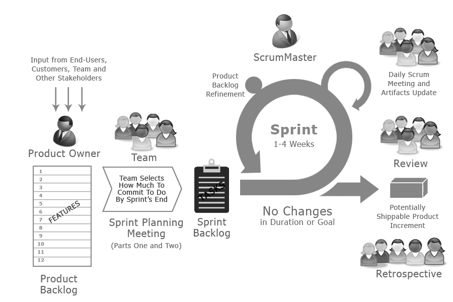
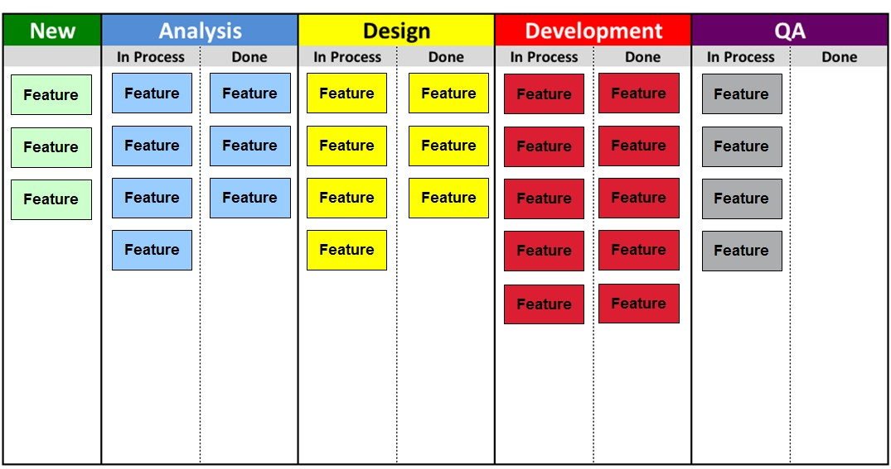

![Genislab]() Genislab Technologies
Genislab TechnologiesSeveral Agile frameworks are existing in the commercial market which are being widely used by the organizations. All these agile framework embrace Agile manifesto, Agile principles and values. The following section describes the agile software development approaches in detail.
The scope of this syllabus document covers three agile frameworks or approaches:
What is Scrum?
Scrum is another Agile Development framework and has several key features that are shown the Figure given below and explained in detail.

Sprint
Scrum framework divides the product development into iterations known as “Sprints” which are time boxed to fixed length of 1 – 4 weeks.
- Every iteration should attempt to build a potentially shippable (properly tested) product increment.
- The time duration for the Sprint and how long it lasts, is decided by the team based on their requirements and capabilities.
- The Sprint duration once finalized should not be modified.
- Product Increment: At the end of the every Sprint the development team delivers a potentially shippable product that is tested and works well. Since Sprints are short in durations, only important features would be developed first. This also gives customers a product that has the basic features that they can test and provide feedback on.
- Product Backlog: The set of all requirements broken down into small work items and prioritized into a list is called product backlog.
- The product backlog emerges over a period of time.
- Refinement of the product backlog is done during the Product Backlog refinement meeting.
- Basically Product Backlog is the requirements for the project and these requirements may be refined during each Sprint.
- Sprint Backlog: Sprint Backlog contains all the known User Stories (or requirements) in the current Sprint.
- The requirement with top priority listed first.
- The team pulls the stories into the Sprint and work collectively.
- Sprint Backlog is basically a list of all the requirements that need to be completed during the Sprint ordered by priority.
- User Stories: Detailed requirements in Agile software development are captured in the form of User Stories, from the point of view of the user rather than the organization or project.
- It captures who, what and why of the requirement from the users perspective.
- Ex. As a customer <role>, I want to <action> so that I can <reason or goal>.
- User stories are short and concise statements.
- They are recorded on sticky notes, index cards etc so that they can be stuck on walls or tables to be rearranged or used during discussion.
- Definition of Done: Definition of Done is a checklist of all exit criteria that must be completed by the team to call it Done. Definition of Done exists at User story level, Sprint level and Release level.
- Time boxing: Time boxing is a concept of fixed time duration in which the team is expected to complete the committed features of work. Every ceremony in Scrum is time boxed as per the recommendations given in the Scrum guide.
- Daily Stand Up Meeting: In Scrum methodology of Agile software development, teams hold a daily planning meeting called the “Daily Scrum Meeting” or “Scrum Meeting” or “Stand-up meeting”.
- In this meeting each team members give an update on 3 questions to the rest of the team and not specifically to the management.
- These questions are – What have I accomplished yesterday? What will I do today? and What is stopping me from proceeding? This increases the visibility of the tasks to everyone in the team.
- This meeting can be also used to raise any potential impediments that block team from accomplishing the sprint goal.
- These meetings are not expected to last more than 15 minutes and is held at the same time and place, everyday.
- A task board may be installed near the teams physical location where everyone can see the tasks moving from one block to the other.
What is Kanban?
The word ‘Kan’ means Visual ‘ban’ means Card. So the meaning of Kanban translates into Visual Card, which refers to a signal card which is emerging as part of Lean Software Development. The primary purpose of Kanban is to visualize the work flow and optimize it and reduce the cycle time of delivering fully completed features.
Basically, Kanban uses three artifacts
- Kanban Board: The board that displays various states of and its moment across the states related to specific activities, e.g., development or testing. It is used to understand the current prioritized work that is being done and also frequent bottle necks across various states.
- Work-in-Progress Limit: The number of tasks that can be in progress in one state is strictly controlled. The lesser the Work in progress number, the more focus and attention, the team can give to it while working. Whenever, a state has some free capacity, a team member can pull in the next high priority task into the Kanban board.
- Lead Time: Lead time is the time interval between the time of ticket creation and time of ticket closure. Kanban system is used to effectively optimize the continuous flow of tasks across the states and improve the lead time.
Figure 2 below shows the Kanban board and its states

Figure-2 Kanban board with states
What is Extreme Programming?
Also known as XP, Extreme Programming was first developed by Kent Beck. XP is an Agile software development framework guided by Agile development practices, principles, and values.
XP values are: Feedback, simplicity, communication, respect and courage.
Principles driving Extreme Programming are: Humanity, mutual benefit, economics, improvement, diversity, self-similarity, opportunity, reflection, redundancy, flow, baby steps, failure, quality, and accepted responsibility.
13 Practices that guide XP engineering are: Whole team, energized work, sit together, informative workspace, slack, stories, pair programming, weekly cycle, quarterly cycle, continuous integration, ten-minute build, incremental design and test first programming.
Several frameworks like Scrum, Kanban adapt to the best engineering practices prescribed by XP.
For example, Scrum team often reuses Extreme Programming engineering practices to build quality into the product increment.
Other popular articles:
- Roles and Responsibilities of Scrum Master and Product Owner in a Scrum team
- What is Release and Iteration Planning in Agile methodology?
- What is User Story Template in Agile software development?
- What is Sprint planning in Agile project management?
- What are Test Levels in Agile methodology?